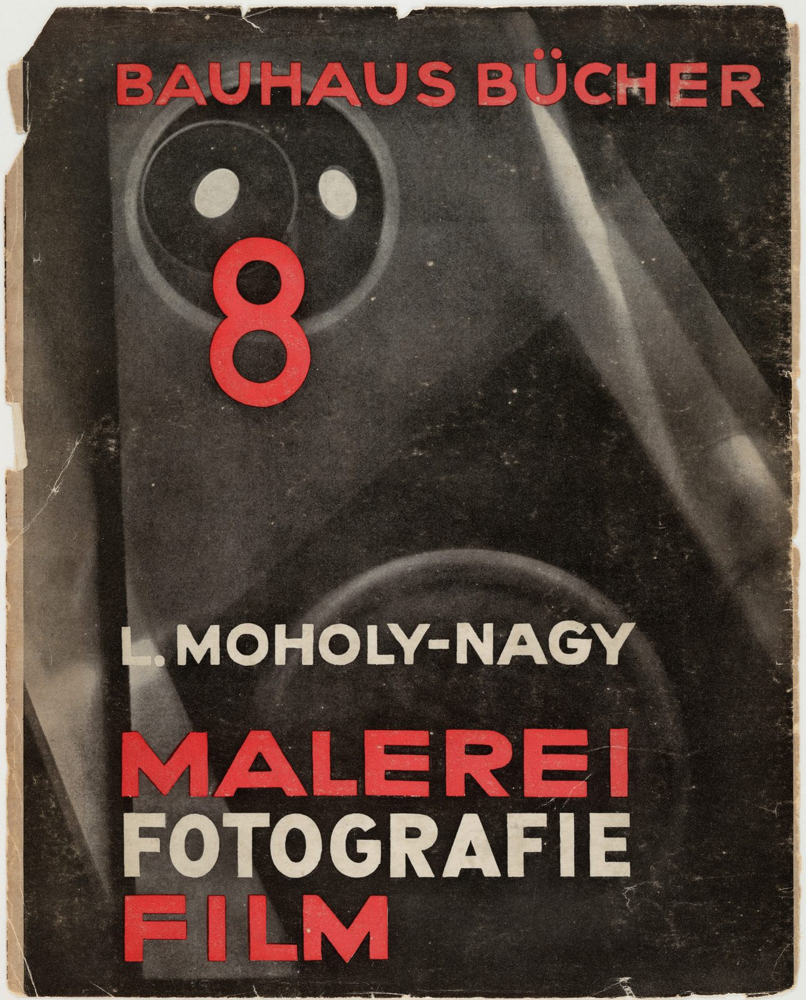

References / Book / 09
Bauhausbücher 8: Malerei, Fotografie, Film
Moholy-Nagy’s own volume in the Bauhaus book series, with a cover that sets red sans-serif type over a close-up photograph of a camera.
- Source
- MoMA: Bauhausbücher 8, L. Moholy-Nagy: Malerei, Fotografie, Film
- Creator
- László Moholy-Nagy
- Made
- 1927 (second edition; first edition 1925)
- Style
- Bauhaus (agent-proposed, not yet reviewed by a person)
- Moods
- Experimental, bold, technical
- Evidence
- Downloaded and inspected the Commons scan of the 1927 cover (1612 × 2000 px). Also compared the 1925 first-edition cover, which spells “Photographie”.
- Reviewed
- Rights
- Open license, stored. License: public domain. Rights policy


Context
MoMA catalogues the cover as “Bauhausbücher 8, L. Moholy-Nagy: Malerei, Fotografie, Film,” 1927. MoMA 8089. The Commons file cites this MoMA record as its source and describes the image as the second edition of 1927. Commons.
The Bauhaus published the Bauhausbücher from 1925 to 1930 with Albert Langen Verlag; Walter Gropius and László Moholy-Nagy were the editors. Wikipedia (de): Bauhausbücher.
The first edition appeared in 1925 with the spelling “Photographie” on the cover. Commons, 1925 cover.
Observed
- A dark, grainy close-up photograph of a camera or projector fills the cover; one round lens with two bright highlights is at upper left.
- “BAUHAUS BÜCHER” runs across the top in red geometric sans-serif capitals.
- A large red numeral 8 sits inside the lens ring.
- The author name is in white capitals; “MALEREI” and “FILM” are in red, “FOTOGRAFIE” in white, all flush left.
- The scanned paper has torn and worn edges.
Why it belongs
The cover shows the Bauhaus interest in machines and new media. The photograph replaces drawn geometry, but the circle of the lens still works as an elementary shape.
The red-white-black scheme and flush-left sans-serif stack became a template for later modernist book design.
Borrow
Put one strong numeral inside a circular form in a photograph to tie type to image.
Alternate two colors line by line in a flush-left title stack.
Measured
Machine-extracted by tools/image-traits.py on . Full measurement.
- Mean chroma
- 0.09
- Palette
- #28231d 35%
- #524b43 14%
- #473f38 12%
- #342f29 11%
- #1d1712 5%
- #d0c4b0 4%
- #d94b48 3%
- #b49d83 3%

